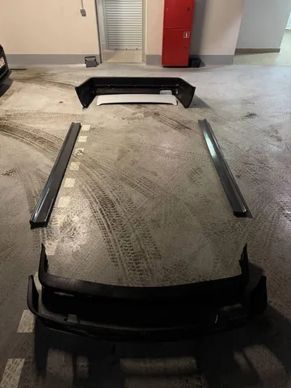

Любая машина в любом состоянии невероятно преображается, если поставить на нее обвес. Казалось бы, немного лишнего пластика по периметру, а результат - как будто уже другая машина. Особенно хорошо это работает со старыми авто с высокими и куцыми бамперами. Силуэт становится более гармоничным и приземистым.
Мы для нашей бэхи купили бампера m-tech2 (копия заводской М-опции для е30), пороги seidl и скромный дак-тейл. Не ставить пороги нельзя, иначе будет диссонанс между низкими бамперами и лютым просветом в базе. Дак-тейл нужен, чтобы скрыть слишком покатый угол крышки багажника и придать общей стремительности силуэту. Расширения арок ставить сразу не хотели, у нас тут не корчестрой.
Конечно же, многое пошло не по плану. Куда без этого. У бамперов не оказалось нужных креплений и пришлось изобретать крнструкцию из площадок и шпилек. И то задний бампер пока не сел хорошо - либо уголки из арок торчат, либо щели у крыла проступают, если двигать его назад. С передним бампером засада оказалась в том, что поворотники от штатного бампера не встают в м-тех, пришлось искать альтернативные. И туманки заодно заказал, чтобы заполнить сиротливо пустующие ниши под них. В общем, тут work in progress, #лёха_строит_бэху
